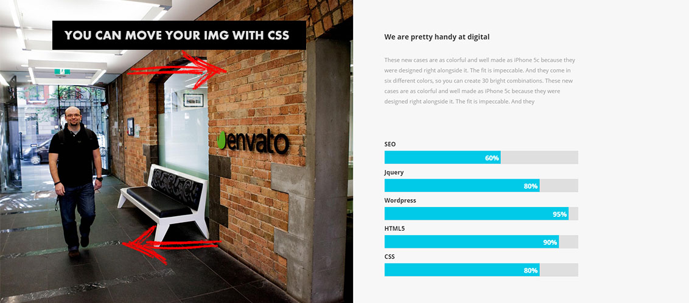
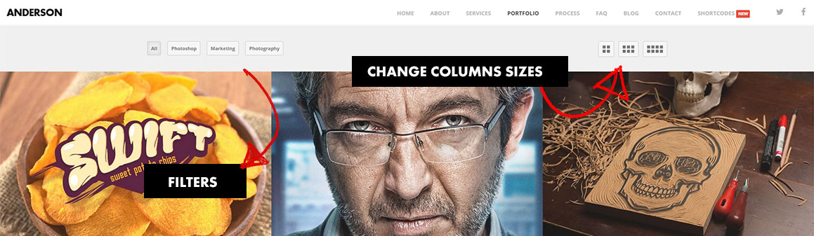

Start
Thank you so much for purchasing my template. If you have any questions that are beyond the scope of this help file, please feel free to contact us.
- Created: 03/12/2014
- Latest Update: 28/02/2015
- By: Breecode
- http://bypixels.com/themes/Anderson
- Email: support@bypixels.com
The Grid System
One Columns
If you want one columns use this markup.
<div class="col-md-12"> CONTENT GOES HERE </div><!-- end span12 -->
Two Columns
<div class="col-md-6"> CONTENT GOES HERE </div><!-- end col-md-6 --> <div class="col-md-6"> CONTENT GOES HERE </div><!-- end col-md-6 -->
Three Columns
<div class="col-md-4">
CONTENT GOES HERE
</div><!-- end col-md-4 -->
<div class="col-md-4">
CONTENT GOES HERE
</div><!-- end col-md-4 -->
<div class="col-md-4">
CONTENT GOES HERE
</div><!-- end col-md-4 -->
Four Columns
<div class="col-md-3">
CONTENT GOES HERE
</div><!-- end col-md-3 -->
<div class="col-md-3">
CONTENT GOES HERE
</div><!-- end col-md-3 -->
<div class="col-md-3">
CONTENT GOES HERE
</div><!-- end col-md-3 -->
<div class="col-md-3">
CONTENT GOES HERE
</div><!-- end col-md-3 -->
Anderson uses Bootstrap 3. For more information about the grid visit http://getbootstrap.com/css/#grid
CSS Structure
This template have a lot of CSS, here is the structure
1 - BASE 2 - PRELOADER 3 - TRANSITIONS 4 - HEADER & MAIN NAV - A) Logo 4 - HEADER & MAIN NAV B) Global 4 - HEADER & MAIN NAV - C)Header social icons background 5 - WELCOME 6 - ABOUT US 7 - PAGE TITLE 8 - RESPONSIVE NAV 9 - REVOLUTION SLIDER & CUSTOM CAPTIONS 10 - VIDEO SLIDER 11 - SERVICES 12 - TEAM 13 - PROCESS 01 14 - RETINA ICONS 15 - SHORTCODES - A) Tabs 15 - SHORTCODES - B) Accordion & Triggers 16 - BLOG - A) Global 16 - BLOG - B) Blog Section 16 - BLOG - C) Blog Post 16 - BLOG - D) About the author 16 - BLOG - E) Comments 17 - BLOG SIDEBAR A) Global 17 - BLOG SIDEBAR B) Tag Cloud 17 - BLOG SIDEBAR C) Categories Widget 18 - PAGINATION 19 - TWITTER FEED 20 - PORTFOLIO A) Global 20 - PORTFOLIO B) two_columns Style 20 - PORTFOLIO C) four_columns Style 20 - PORTFOLIO D) Isotope 21 - FAQ 22 - PRICING TABLES 23 - CLIENTS 24 - FOOTER 25 - SKILLS 26 - BUTTONS 27 - ICONS 28 - TESTIMONIALS 29 - PARALLAX SECTIONS 30- ANIMATIONS 31 - MEDIA QUERIES
Slides & Google Fonts
Every HTML file comes with the Google Font links, so you don't have to config anything, but in order to undertand Anderson better we have made a guide. This guide will tell you what font uses each slider.
Style 01
This style uses Google Font: Lato as a main font and Google font: Open Sans as a second font.
<!-- DEFAULT TEMPLATE FONTS DO NOT REMOVE -->
<link href='http://fonts.googleapis.com/css?family=Open+Sans:400,800,300,600,700' rel='stylesheet' type='text/css'>
<link href='http://fonts.googleapis.com/css?family=PT+Sans:400,700' rel='stylesheet' type='text/css'>
<!-- EXTRA FONT FOR SLIDER -->
<link href='http://fonts.googleapis.com/css?family=Lato:100,300,400' rel='stylesheet' type='text/css'>Style 02
This style uses Google Font: Lato as a main font and Google font: Open Sans as a second font.
<!-- DEFAULT TEMPLATE FONTS DO NOT REMOVE -->
<link href='http://fonts.googleapis.com/css?family=Open+Sans:400,800,300,600,700' rel='stylesheet' type='text/css'>
<link href='http://fonts.googleapis.com/css?family=PT+Sans:400,700' rel='stylesheet' type='text/css'>
<!-- EXTRA FONT FOR SLIDER -->
<link href='http://fonts.googleapis.com/css?family=Lato:100,300,400' rel='stylesheet' type='text/css'>
Style 03
This style uses Google Font: Roboto as a main font and Google font: Open Sans as a second font.
<!-- DEFAULT TEMPLATE FONTS DO NOT REMOVE -->
<link href='http://fonts.googleapis.com/css?family=Open+Sans:400,800,300,600,700' rel='stylesheet' type='text/css'>
<link href='http://fonts.googleapis.com/css?family=PT+Sans:400,700' rel='stylesheet' type='text/css'>
<!-- EXTRA FONT FOR SLIDER -->
<link href='http://fonts.googleapis.com/css?family=Roboto:400,100,700' rel='stylesheet' type='text/css'>Style 04
This style uses Google Font: Raleway as a main font and Google font: Ubuntu as a second font.
<!-- DEFAULT TEMPLATE FONTS DO NOT REMOVE -->
<link href='http://fonts.googleapis.com/css?family=Open+Sans:400,800,300,600,700' rel='stylesheet' type='text/css'>
<link href='http://fonts.googleapis.com/css?family=PT+Sans:400,700' rel='stylesheet' type='text/css'>
<!-- EXTRA FONT FOR SLIDER -->
<link href='http://fonts.googleapis.com/css?family=Raleway:400,300,700' rel='stylesheet' type='text/css'>
<link href='http://fonts.googleapis.com/css?family=Ubuntu:300,400,700' rel='stylesheet' type='text/css'>
Style 05
This style uses Google Font: PT Sans as a main font.
<!-- DEFAULT TEMPLATE FONTS DO NOT REMOVE -->
<link href='http://fonts.googleapis.com/css?family=Open+Sans:400,800,300,600,700' rel='stylesheet' type='text/css'>
<link href='http://fonts.googleapis.com/css?family=PT+Sans:400,700' rel='stylesheet' type='text/css'>
Style 06
This style uses Google Font: Amatic SC as a main font and Google font: Dancing Script as a second font.
<!-- DEFAULT TEMPLATE FONTS DO NOT REMOVE -->
<link href='http://fonts.googleapis.com/css?family=Open+Sans:400,800,300,600,700' rel='stylesheet' type='text/css'>
<link href='http://fonts.googleapis.com/css?family=PT+Sans:400,700' rel='stylesheet' type='text/css'>
<!-- EXTRA FONT FOR SLIDER -->
<link href='http://fonts.googleapis.com/css?family=Amatic+SC:400,700' rel='stylesheet' type='text/css'>
<link href='http://fonts.googleapis.com/css?family=Dancing+Script:700' rel='stylesheet' type='text/css'>
Style 07
This style uses Google Font: Oswald as a main font
<!-- DEFAULT TEMPLATE FONTS DO NOT REMOVE -->
<link href='http://fonts.googleapis.com/css?family=Open+Sans:400,800,300,600,700' rel='stylesheet' type='text/css'>
<link href='http://fonts.googleapis.com/css?family=PT+Sans:400,700' rel='stylesheet' type='text/css'>
<!-- EXTRA FONT FOR SLIDER -->
<link href='http://fonts.googleapis.com/css?family=Oswald:400,700,300' rel='stylesheet' type='text/css'>
Style 08
This style uses Google Font: Josefin Slab as a main font
<!-- DEFAULT TEMPLATE FONTS DO NOT REMOVE -->
<link href='http://fonts.googleapis.com/css?family=Open+Sans:400,800,300,600,700' rel='stylesheet' type='text/css'>
<link href='http://fonts.googleapis.com/css?family=PT+Sans:400,700' rel='stylesheet' type='text/css'>
<!-- EXTRA FONT FOR SLIDER -->
<link href='http://fonts.googleapis.com/css?family=Josefin+Slab:300,400,600' rel='stylesheet' type='text/css'>
Style 09
This style uses Google Font: Oswald as a main font
<!-- DEFAULT TEMPLATE FONTS DO NOT REMOVE -->
<link href='http://fonts.googleapis.com/css?family=Open+Sans:400,800,300,600,700' rel='stylesheet' type='text/css'>
<link href='http://fonts.googleapis.com/css?family=PT+Sans:400,700' rel='stylesheet' type='text/css'>
<!-- EXTRA FONT FOR SLIDER -->
<link href='http://fonts.googleapis.com/css?family=Oswald:400,700,300' rel='stylesheet' type='text/css'>
Style 10
This style uses Google Font: PT Sans as a main font
<!-- DEFAULT TEMPLATE FONTS DO NOT REMOVE -->
<link href='http://fonts.googleapis.com/css?family=Open+Sans:400,800,300,600,700' rel='stylesheet' type='text/css'>
<link href='http://fonts.googleapis.com/css?family=PT+Sans:400,700' rel='stylesheet' type='text/css'>
Style 11
This style uses Google Font: PT Sans as a main font
<!-- DEFAULT TEMPLATE FONTS DO NOT REMOVE -->
<link href='http://fonts.googleapis.com/css?family=Open+Sans:400,800,300,600,700' rel='stylesheet' type='text/css'>
<link href='http://fonts.googleapis.com/css?family=PT+Sans:400,700' rel='stylesheet' type='text/css'>
Style 12
This style uses Google Font: Open Sans as a main font
<!-- DEFAULT TEMPLATE FONTS DO NOT REMOVE -->
<link href='http://fonts.googleapis.com/css?family=Open+Sans:400,800,300,600,700' rel='stylesheet' type='text/css'>
<link href='http://fonts.googleapis.com/css?family=PT+Sans:400,700' rel='stylesheet' type='text/css'>
Style 13
This style uses Google Font: Open Sans as a main font
<!-- DEFAULT TEMPLATE FONTS DO NOT REMOVE -->
<link href='http://fonts.googleapis.com/css?family=Open+Sans:400,800,300,600,700' rel='stylesheet' type='text/css'>
<link href='http://fonts.googleapis.com/css?family=PT+Sans:400,700' rel='stylesheet' type='text/css'>
Style 14
This style uses Google Font: Open Sans as a main font
<!-- DEFAULT TEMPLATE FONTS DO NOT REMOVE -->
<link href='http://fonts.googleapis.com/css?family=Open+Sans:400,800,300,600,700' rel='stylesheet' type='text/css'>
<link href='http://fonts.googleapis.com/css?family=PT+Sans:400,700' rel='stylesheet' type='text/css'>
Style 16
<!-- DEFAULT TEMPLATE FONTS DO NOT REMOVE -->
<link href='http://fonts.googleapis.com/css?family=Open+Sans:400,800,300,600,700' rel='stylesheet' type='text/css'>
<link href='http://fonts.googleapis.com/css?family=Six+Caps' rel='stylesheet' type='text/css'>
Video Style Background
To add a video just go to youtube, select your video. Click in share, and copy the URL. Then go to your index-16.html file where you have the video and paste the URL from youtube embed code. (look at screenshot two). Click in the image to amplify it.
{kind=link}
About & Team
The about image could be move with css

How to move my image?
Use this code to move your image horizontally
.about_image {background-position-x: -180px;}Team
The team section is divided into 4 custom columns
This is the complete list of icons that you can use in the team section hover
<li class="wordpress_icon"><a href="#"><i class="fa fa-wordpress fa-2x"></i></a></li>
<li class="linkedin_icon"><a href="#"><i class="fa fa-linkedin fa-2x"></i></a></li>
<li class="behance_icon"><a href="#"><i class="fa fa-behance-square fa-2x"></i></a></li>
<li class="skype_icon"><a href="#"><i class="fa fa-skype fa-2x"></i></a></li>
<li class="youtube_icon"><a href="#"><i class="fa fa-youtube-square fa-2x"></i></a></li>
<li class="tumblr_icon"><a href="#"><i class="fa fa-tumblr fa-2x"></i></a></li>
<li class="googlep_icon"><a href="#"><i class="fa fa-google-plus fa-2x"></i></a></li>
<li class="github_icon"><a href="#"><i class="fa fa-github-alt fa-2x"></i></a></li>
<li class="instagram_icon"><a href="#"><i class="fa fa-instagram fa-2x"></i></a></li>
<li class="pinterest_icon"><a href="#"><i class="fa fa-pinterest fa-2x"></i></a></li>3 columns in team?
use this code if you want to have 3 columns instead of 4
Go to your style.css file and search for .team_item the actual widh is 25% wich means that we could have 100/25 = 4 columns, to have 3 we must update this width
value to 33,33% so we are going to have 100/33,33 = 3
What about 2 columns?
Same here, update the width value to 50% and you will have 100/50 = 2 columns
Portfolio
Anderson comes with a great portfolio style
Give user the posibility to change the columns
Anderson comes with a column buttons, this offer the posibility to the user to change the size of the columns. You can remove this buttons if you want and use only one sizes.
Columns in portfolio
Changing columns in portfolio is very simle, and you can make it with only one change of class.
Two columns
To have 2 columns add the class two_columns to the grid wrapper like this:
<div class="grid animated" data-animation-target="10">And you code should look like this to have two columns.
<div class="grid animated two_columns" data-animation-target="10">Three columns
Three columns is the default size of the grid, so, you don't need to add any class.
Four columns
To have 2 columns add the class four_columns to the grid wrapper like this:
<div class="grid animated" data-animation-target="10">And you code should look like this to have four columns.
<div class="grid animated two_columns" data-animation-target="10">Ajax portfolio
If you click in the portfolio item and the slide dont brings the HTML do this:1 - First - Check that you portfolio item is linking to an existing HTML file.
2 - Second - If you are opening the file from your computer make sure that have Anderson folder in a local server.
Icons
How to change an icon?
As you can see fa-twitter is the name of the icon, you have to change the name to change the icon. Here you can see a complete list of icons, select the name and
replace it.
<i class="fa fa-twitter fa-2x"></i>The complete Font Awesome icon reference
Size of the icon
<i class="fa_icon icon-align-justify icon-3x"></i>
Has you can see the icon have a fa-2x, fa-3x, fa-4x, or fa-5x classes.. To change the size of an icon just change the number like
fa-2x fa-3x fa-4x
Shortcodes
We have developed an entire section to shortcodes with examples and live demos. Please go to shortcodes.html in your download. You also have the sample code to copy and paste :)
Contact Form Ready
Anderson comes with a send.php file that allows you to send emails through the contact form. All you have to do is put your email in line 18.
Remember to put the send.php file in the same folder that the index.html file.
Skin colors
Anderson comes with beautiful skin colors, to change the skin go to style.css and change this line @import url("css/skins/blue.css");
Available skins colors: blue.css gray.css green.css midnight.css orange.css purple.css red.css yellow.css
Custom.js
All the javascript is in the custom.js file. USe it to modify settings for Sliders, Portfolio, Twitter, etc.
Twitter Feed
//Twitter feed
$(document).ready(function() {
$('.tweet').twittie({
dateFormat: '%b. %d, %Y',
template: '<a href="{{url}}">{{avatar}}</a>{{tweet}} <div class="date">by {{screen_name}} {{date}} </div>',
username: 'envato',
count: 4,
});
});
Replace the username to your username.
Carousel
Anderson comes with a lot of carousel ready to use, if you want to create a custom ones, make sure that you are familiar with the carousel plugin, there is a site with a lot of demos and documentation that can make you the work a lot easier. http://www.owlcarousel.owlgraphic.com/index.html
Source & Credits
I've used the following images, icons or other files as listed.
- Bootstrap 3
- Jquery Library
- Isotope
- Jquery PrettyPhoto
- Jquery Tweets
- Styleswitcher
- Carousel
- One Page Nav
- Scroll to
- Revolution Slider
Images by Daniel Zedda